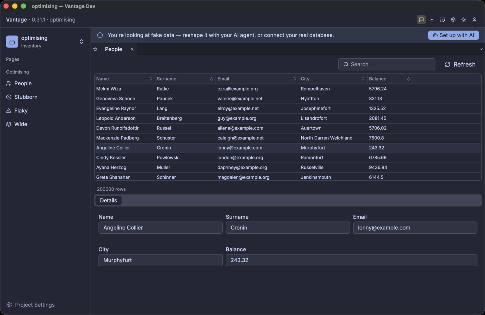

The setup
An enterprise source holds millions of records, and there can be hundreds of changes each second. The change channels are coarse: one channel for each table. But no user observes millions of records. A user looks at 20 or 30 rows, and possibly at some aggregated values.
A Vantage client makes the distinction. Vantage UI connects to the datasource and then narrows the data to a viewport, which is the set of rows on screen. A live cache at the edge follows the same principle when it drives a frontend application: it holds a fragment of the table, and it forwards the changes that touch that fragment. The cache is the same cache in both cases, so what you learn here against Vantage UI transfers to the other components.
To measure a cache strategy you need three things:
- a source whose behaviour you control: fast, slow, unreliable, or fast-changing
- a consumer that you can navigate by hand and check by eye
- full transparency into the cache mechanics, through a real-time log
This chapter uses a Vantage Faker datasource, Vantage UI, and the full cache log.
Create a project
Vantage UI is a free download from vantage-ui.com. It installs as a normal macOS application.
Start it normally, create a new project, and choose Fake Data in the wizard. Then find the
project folder — this chapter calls it optimising — and examine the structure inside:
optimising/
├── datasource/people.yaml where the rows come from
├── table/people.yaml the columns, and which datasource supplies them
├── page/people.yaml what the screen shows
└── menu/left.yaml how to open the page
A project is a folder of YAML, and each folder holds one kind of declaration. Change the four files to match the listings below.
The datasource is a faker source. It generates rows instead of fetching them, and you declare how it behaves. This one holds 200,000 personal records: names, surnames, emails, and some additional data.
# datasource/people.yaml
type: faker
effect: static
count: 200000
seed: 103
shape:
capabilities: [count, fetch_window, order, search]
latency:
window: 10ms..40ms
get: 5ms..20ms
capabilities is the contract of the source. A real driver declares what it can do, and faker
declares what you tell it to. The list above mimics a SQL source:
count— the source reports how many rows the table holds. The grid then knows the size of the scrollbar before it has any row.fetch_window— the source serves a range, such as rows 500 to 600. Without it, the only operation is “read everything”.order— the source sorts. A sort then applies to all the rows, and not to the loaded rows.search— the source filters, with the same condition.
The source refuses each operation that is not in the list, and the work then moves to the client. Section 3 removes them one at a time.
Vista — the Universal Data Handle describes the full set of capability flags and how a driver declares them.
Once the datasource exists, declare the tables on it. Each table names its columns and the datasource that supplies them:
# table/people.yaml
datasource: people
title: People
columns:
- { name: id, type: string, flags: [id] }
- { name: name, type: string, flags: [title, searchable] }
- { name: surname, type: string, flags: [title, searchable] }
- { name: email, type: string }
- { name: city, type: string }
- { name: balance, type: decimal }
Each column name is significant. name generates human names, surname generates surnames, and
email generates email addresses. Faker uses the column name first and the declared type second, so
a name that faker does not recognise gets a value from its type. Every value is fake, and faker
generates all of them at start-up from the seed.
Use realistic names. Much of this chapter measures size, and a table of row_1 and row_2 values
makes each of those measurements wrong.
A table file follows the Vantage YAML specification, which is the same for every datasource type. It
declares columns, types, and flags, and nothing more. A datasource file has no such restriction, so
each faker knob is there: count, seed, effect, and the full shape: block.
One faker datasource therefore describes one set of rows. Give each table its own datasource. This
chapter builds four: people, stubborn, flaky, and wide, one for each behaviour that it
measures.
The page shows a binder. A binder appears as a full CRUD screen: it lists the rows, it edits them when the source supports editing, it has a quick-search box and column ordering, and a click on a row opens a summary of that row. Behind the screen it keeps its viewport equal to the rows that you see.
Vantage UI also has a kind: grid component. A grid has no search box, so this chapter uses a
binder.
# page/people.yaml
title: People
body:
- kind: binder
name: people
observe: people
params:
columns:
name: { width: 160 }
surname: { width: 160 }
email: { width: 220 }
city: { width: 180 }
balance: { width: 120 }
The menu makes the page available:
# menu/left.yaml
title: Optimising
items:
- section: Optimising
children:
- page: people
label: People
icon: Users
Run it
Each later section starts Vantage UI again from the command line, and not from the Finder. The binary in the bundle accepts arguments, and the debug output goes to stdout. Make an alias:
alias vantage-ui='/Applications/Vantage.app/Contents/MacOS/vantage-ui'
vantage-ui ./optimising --page=people

The binder lists the rows, and a click on a row fills the details panel below it. The row count says 200000, because the source counted the set. Scrolling is smooth, and no row stays empty for long enough to see.
The first argument is the project folder. --page=<key> opens that page instead of the first entry
in the menu. This matters: a page that you did not intend to measure also opens a Dio, and its
requests go into the same statistics.
Vantage UI builds one Dio for each observed table, when a page that observes it opens. The other YAML files in the folder cost nothing until you open them.
Two conditions make a measurement unclear:
- One page with components that observe different tables. Each component has its own Dio and sends its own requests.
- Tabs that stay open behind the page that you measure. Each open tab keeps its Dios active.
Use one table, one binder, and one variable. Close the pages that you do not measure.
This chapter uses Vantage UI, because Vantage UI supplies the viewport. The faker source does not
need Vantage UI. vantage-faker is a normal crate, and the YAML above is a
BackendShape
in a file. This code builds the same datasource:
#![allow(unused)]
fn main() {
use std::time::Duration;
use vantage_faker::{BackendShape, FakerTable, Latency, LatencyModel, StaticEffect};
use vantage_vista::VistaCapabilities;
let table = FakerTable::build_shaped(
"people",
columns, // Vec<FakerColumn> — name, type, flags
"id",
Box::new(StaticEffect { count: 200_000 }),
BackendShape {
capabilities: VistaCapabilities {
can_count: true,
can_fetch_window: true,
can_order: true,
can_search: true,
..VistaCapabilities::default()
},
latency: LatencyModel {
window: Some(Latency::between(
Duration::from_millis(10),
Duration::from_millis(40),
)),
get: Some(Latency::between(
Duration::from_millis(5),
Duration::from_millis(20),
)),
..LatencyModel::default()
},
seed: Some(103),
..BackendShape::default()
},
);
// From here, this is the normal reactive stack. Nothing is faker-specific.
let (vista, _handle) = table.split();
let dio = lens.make_dio(vista).await?;
}Use this code when your own code is the consumer: an integration test that calls set_viewport, a
CLI, or a scenery in a terminal.
Keep the handle. If you drop the handle, the effect loop stops, and a live effect then stops changing the data.
Switch on the debug stream
Delete the cache and start Vantage UI again. Each measurement in this chapter starts from an empty cache, because a full cache serves the first screen and asks the source for nothing.
rm -rf ~/Library/Caches/Vantage/optimising-*
vantage-ui ./optimising --page=people
Without the debug flag, the output describes the start-up and nothing else:
INFO vantage_ui: starting root="…/optimising" has_project=true
INFO catalog: loaded datasource key="people"
INFO catalog: loaded table key="people"
INFO catalog: loaded framework page key="people"
INFO vantage_ui: Dio cache dir path="~/Library/Caches/Vantage/optimising-c79233058eb9f98f"
INFO vantage_ui: configured faker datasource datasource=people effect=Some("static")
INFO vantage_ui: entity open, by phase key=people/people ms=2891
breakdown=vista=2798ms cache=82ms dio=2ms scenery=7ms
This tells you what loaded. The last line is the only measurement: 2.8 seconds inside the Vista, which is faker generating 200,000 rows at start-up. Nothing here reports a request, a cache hit, or a row.
Now add one line to the datasource:
# datasource/people.yaml
type: faker
effect: static
debug: true # ← add this
count: 200000
Delete the cache and start it again:
rm -rf ~/Library/Caches/Vantage/optimising-*
vantage-ui ./optimising --page=people
A second stream now appears beside the log:
11:53:45.591 people dio created over "people" — cache table "people_people", nothing held yet
11:53:45.592 people source can count, window, order, search · pages lazily, 100 rows at a time
11:53:45.592 people scenery opened cold — 0 rows seeded from cache
11:53:45.593 people census +1 table scenery — now 1 table, 0 record, 0 servo · rss 310MB
11:53:45.645 people viewport rows 0..200 — 2 scroll events coalesced into one
11:53:45.645 people dio fetch #1 asks for rows 0..200 — 200 missing, 0 already held
11:53:45.715 people cache +200 new, 0 updated — now holding 200 of 200,000 (0.1%)
11:53:45.715 people scenery opening → partial (chunk load succeeded)
11:53:45.716 people dio fetch #1 got 200 rows in 70ms
11:53:45.716 people payload 6 columns received · no view declared what it needs, so all were
fetched · 23KB · id,name,surname,email,city,balance
11:53:45.717 people total 200,000 rows — stated by the source in the same response
11:53:45.821 people cache all 22 rows of 0..22 served locally — no fetch
That is one page opening, from an empty cache. The binder asked for 200 rows, one request supplied them, and the last line is the repaint that followed: 22 rows on screen, no request.
The flag applies to one datasource. It is not a global setting. Your other datasources stay silent, so the question is always “what does this table do?”.